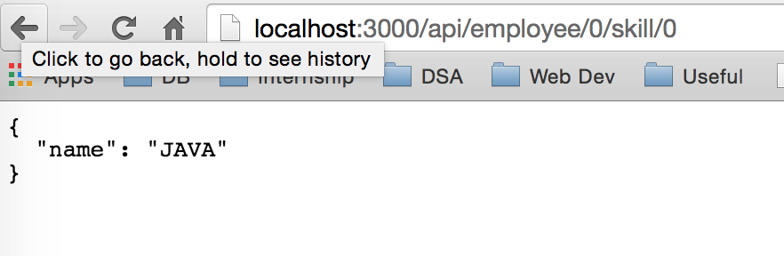

JSON Responses using NodeJS
Click here to redirect to the server that is hosted to check the output page.

Click here to redirect to the server that is hosted to check the output page.

Click here to redirect to the server that is hosted to check the output page.
Click here to redirect to the server that is hosted to check the output page.
Code Snippet
In this experiment I have defined an array employee which has details of employess as shown in the code. When I give parameter along with namaspace of employee that is app.get('/api/employee' I get all the empoyee details. I can check a specific employee by passing the index of that employee in the array as paramtere.
employee =[
{name:"Pankaj", skill:[{name: "JAVA"},{name:"WEB DEV"},{name:"DB"}]},
{name:"Kartik", skill:[{name: "JAVA"},{name:"SAS"},{name:"DB"}]},
{name:"Vikas", skill:[{name: "JAVA"},{name:"WEB DEV"},{name:"DB"}]},
{name:"Abhishek", skill:[{name:"WEB DEV"},{name:"DB"}]},
{name:"Shakti", skill:[{name: "JAVA"},{name:"WEB DEV"},{name:"DB"},{name:"AI"}]}
];
app.get('/api/employee', function(req,res){
res.json(employee);
});
app.get('/api/employee/:index', function(req,res){
res.json(employee[req.params.index]);
});
app.get('/api/employee/:index/skill', function(req,res){
res.json(employee[req.params.index].skill);
});
app.get('/api/employee/:index/skill/:idx', function(req,res){
var skillId = req.params.idx;
res.json(employee[req.params.index].skill[skillId]);
});
Description
Node.js is an open source, cross-platform runtime environment for server-side and networking applications.
Node.js applications are written in JavaScript, and can be run within the Node.js runtime on OS X, Microsoft Windows, Linux and FreeBSD.
Node.js provides an event-driven architecture and a non-blocking I/O API that optimizes an application's throughput and scalability.
These technologies are commonly used for real-time applications.
Node.js uses the Google V8 JavaScript engine to execute code, and a large percentage of the basic modules are written in JavaScript.
Node.js contains a built-in library to allow applications to act as a Web server without software such as Apache HTTP Server or IIS.
You can download NodeJS from here.
JSON(JavaScript Object Notation) is the open standard format uses human readable text to transmit data object consisting of attribute value pair. It will return ordered list of values.
In this experiment, I've build on experiment 1 to create JSON responses from the server to the client.
Here the server checks for a particular url and based on that it sends a response in JSON format to the client.
Here an array of JSON objects is hard-coded. I'm using different get functions to send a respons to the client based on the url received.
Source Code
References
Youtube VideoW3Schools